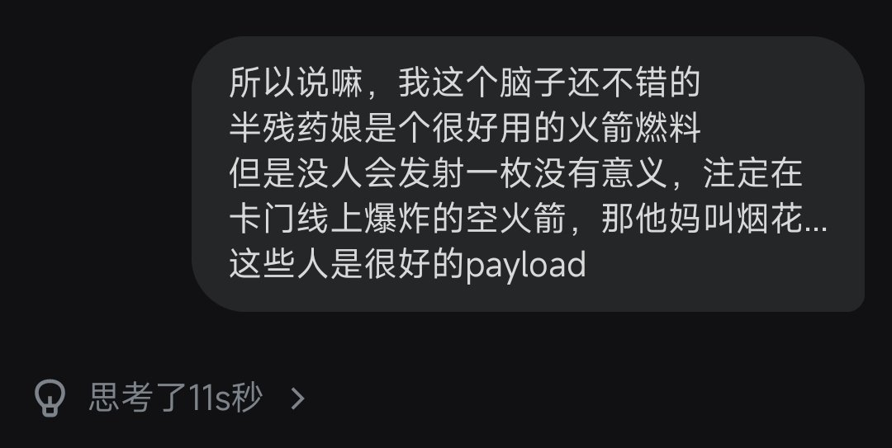

☯️🧬霊狐製作所 公式ツイッター
@Cheese_Ghostfox
燃烧无意义的残陋生命
以价值的创造，赋短暂岁月余创造的价值
大概是狐在极致的虚无与平淡的绝望中给自己找到的一点目标吧...背负一些目光总会奇迹般地让人觉得自己的生命还没有那么轻贱
For every one on the LIST.

☯️🧬霊狐製作所 公式ツイッター
@Cheese_Ghostfox
狐的信条大概是这理论的反面罢(
「得我者永得」
即使可悲的当下已然存在隔阂了
但狐不会忽视幸福的过往
不会强行和好，但是ta们相比陌生人总归是会有些「特殊的位置」
忘记伤害，但铭记高光
某个人在狐这里的权限等级完全取决于「好感度曲线」的峰值 https://t.co/CkfvRmpSSG